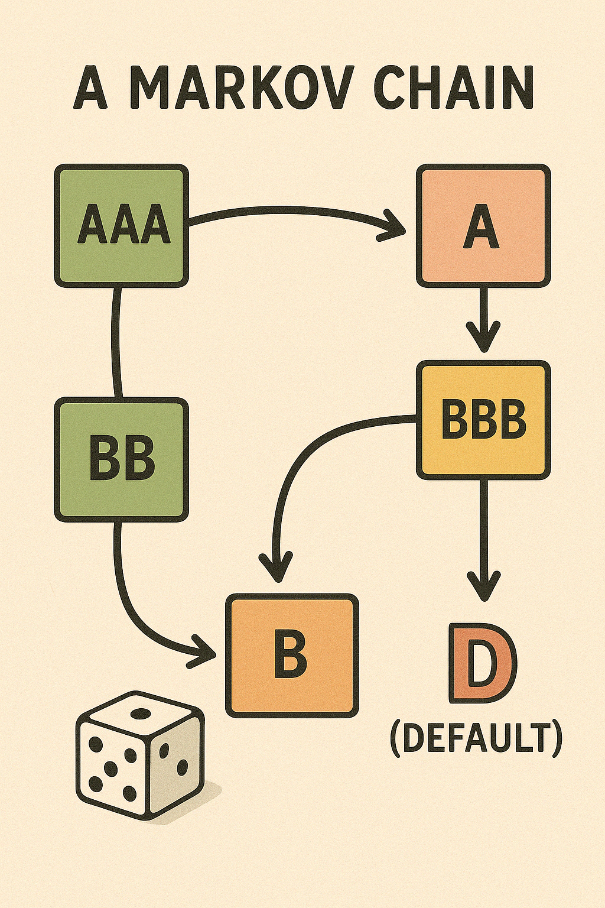

Markov Chains¶
TL;DR¶
A Markov Chain is a model where you move between states, and your next move depends only on where you are now. We use a transition matrix to represent the rules, and sometimes the system settles into a long-term distribution called the stationary distribution. In finance, this is super useful for modeling credit rating transitions, especially with absorbing states like default.
Intro¶
Imagine a simple board game where you throw a dice , and depending on the result, you move to a different square. Each square has arrow showing where you might land next - based only on where you are now, not how you got there.
This is the idea of a Markov Chain.
A Markov Chain is a system that moves between states, and the next move depdns only on the current state, not the full history.
Core Concepts with Analogies (Credit Rating)¶
| Concept | Meaning | Analogy |
|---|---|---|
| State | A situation or status (e.g., credit rating AA) | Square on the board |
| Transition | Moving from one state to another | Rolling a die and moving forward |
| Transition matrix | Table showing the probabilities of moving from one state to another | Rules for dice outcomes |
| Stationary distribution | Long-term behavior: how often you land on each state | Where youll spend most of your time |
| Absorbing state | A state that, once entered, you never leave (like default) | A square that ends the game |

Transition Matrix¶
Lets say you have \(N\) states. The matrix \(P\) of transition probabilities looks like this:
And each row must sum to 1:
Stationary Distribution¶
As time goes on, the Markov chain might settle into a pattern where it spends time in states according to a fixed distribution \(\pi\):
This means if you start with \(\pi\), applying the matrix dosent change it its a fixed point.
Estimating Transition Probabilities from Data¶
If you observe a lot of transitions, you can build a frequency table. Suppose:
- \(n_{ij}\): number of times we observe a transition from state \(i\) to state \(j\)
Then the maximum likelihood estimator is:
Absorbing States¶
A state is absorbing if: \(p_{ii} = 1\), meaning once you enter it, you stay there. In finance, default is modeled this way.
Visualizing a Markov Chain with Credit Ratings¶
graph TD
A[AAA] -->|0.9| A
A -->|0.1| B[AA]
B -->|0.85| B
B -->|0.1| C[A]
B -->|0.05| D[Default]
C -->|0.8| C
C -->|0.2| D
D -->|1.0| D- AAA is the best
- Default is an absorbing state
- Arrows show probabilities of moving between ratings
Stationary Distribution¶
Lets solve for a stationary distribution \(\pi\) in a 2-state example:
We want:
This gives:
Solving the first two yields:
Simplification¶
A 2-State Weather Model¶
Imagine a world where the only two weather states are:
- Sunny
- Rainy
Youd told:
- If today is sunny, there is a 70% chance tomorrow is sunny, 30% chance it will rain.
- If today is rainy, there is a 60% chance tomorrow is rainy, a 40% chance it will be sunny.
graph LR
S[]
R[]
S-->|0.7|S
S-->|0.3|R
R-->|0.4|S
R-->|0.6|RLets say today is sunny. Lets compute: whats the probability it will be sunny in 2 days?
graph LR
S0[] -->|0.7| S1[]-->|0.7| S2[]
S0[] -->|0.3| R1[]-->|0.4| S3[]
S1[]-->|0.3| R2[]
R1[]-->|0.6| R3[]
So we have:
- Sunny in 2 days:
- 0.7 x 0.7 = 0.49
- 0.3 x 0.4 =0.12
- in total: 0.49 + 0.12 =0.61
- Rainy in 2 days:
- 0.7 x 0.3 =0.21
- 0.3 x 0.6 =0.18
- in total: 0.21 + 0.18 =0.39
So:
So we can say that we are tracking how a system moves between states over time. And we are predicting the future by using simple rules about the current state. Thats what markov chains are.
A method of reasoning about how things change over time, assuming the next step only depends on the current one.
This is called the Markov Property.
Let:
- \(S_t\): the state at time \(t\)
- \(P(S_{t+1} = \text{sunny} \mid S_t = \text{sunny}) = 0.7\)
- \(P(S_{t+1} = \text{rainy} \mid S_t = \text{sunny}) = 0.3\)
- Etc.
You only need to look at today to predict tomorrow not the whole weeks history.
Application: Credit Ratings¶
Imagine your credit is rated:
- A (great)
- B (okay)
- D (default)
Just like the weather, companies transition between credit levels:
- A might stay A, or fall to B
- B might stay B, improve to A, or fall to D
- D (default) is absorbing: once there, you stay
We can now apply the same simple logic:
If a company is B today:
- 50% chance stays B
- 30% chance to A
- 20% chance to D
We now say, if you have:
- \(n\) states
- The transition from state \(i\) to state \(j\) has probability \(P_{ij}\)
Then after two steps:
From state A (i) to state C (j) in 2 moves. That means: First you go from A to some intermediate stabe B(k), then from B to C.
the full path is: \(i \rightarrow k \rightarrow j\) , we are just chaining together two-one-step moves.
Lets say:
- \(P_{ik}\): Probability to go from i to k in 1 step
- \(P_{kj}\): Probability to go from k to j in 1 step
Then the total probability of the path: \(i \rightarrow k \rightarrow j\) is simply: \(P_{ik} \cdot P_{kj}\) , you multiply because these two steps are independent events happening in sequence.
If there isnt just one middle state \(k\), there could be multiple:
So to find the total probability of getting from i to j in exactly 2 steps, you must: Add up all those possible paths.
If you have 2 total states (say, Sunny and Rainy), then the summation over k the intermediate state should be:
Where:
- \(i\) is the starting state
- \(j\) is the ending state
- \(k\) runs over all possible intermediate states (1 and 2 in your case)
If you had 3 states (e.g., A, B, C), then:
So in general:
This formula is scalar-wise computing the (i,j) element of the squared transition matrix, it as a sum of path probabilities.
Thats just repeating what we did with sunny/rainy paths!
We only need a sum of multiplications.
What happens over time?
If you run this process over and over (like predicting weather every day), you might find that your probability of being in each state stabilizes.
This stable pattern is called the stationary distribution
A matrix wise intuition for Credit Rating As a Markov Chain¶
graph TD
A[A: High Grade] -->|0.80| A
A -->|0.15| B[B: Medium Grade]
A -->|0.05| D[**D: Default**]
B -->|0.20| A
B -->|0.60| B
B -->|0.20| D
D -->|1.00| DThis visual makes it clear that:
- A and B can both lead to D (default)
- D loops to itself (absorbing)
Lets compute the probability that a company starting in state A ends up in D (default) after 3 years.
We list all paths from A to D in 3 steps. You can think of this like all 3-move board game paths:
All Possible Paths (A D):
-
A A A D:
\(0.8 \times 0.8 \times 0.05 = 0.032\)
-
A A B D:
\(0.8 \times 0.15 \times 0.2 = 0.024\)
-
A A D D:
\(0.8 \times 0.05 \times 1 = 0.04\)
-
A B B D:
\(0.15 \times 0.6 \times 0.2 = 0.018\)
-
A B A D:
\(0.15 \times 0.2 \times 0.05 = 0.0015\)
-
A B D D:
\(0.15 \times 0.2 \times 1 = 0.03\)
-
A D D D:
\(0.05 \times 1 \times 1 = 0.05\)
Add them ALL: \(P(\text{AD in 3 steps}) = 0.032 + 0.024 + 0.04 + 0.018 + 0.0015 + 0.03 + 0.05 = \boxed{0.1955}\)
Organize the Probabilities in a Table (From Scalars to Grid)¶
We already used these scalar transition probabilities:
| From / To | A | B | D |
|---|---|---|---|
| A | 0.80 | 0.15 | 0.05 |
| B | 0.20 | 0.60 | 0.20 |
| D | 0.00 | 0.00 | 1.00 |
This is now a transition table a 2D grid.
Turn That Table Into a Transition Matrix P¶
Now lets write the same thing using math notation:
Each row tells you: from this state, what are the chances of going to all other states.
One-Step Probability as a Matrix Dot Product¶
Lets say a company is currently in state A.
We represent that as a vector:
To find the probabilities after 1 year, you multiply:
That means:
- 80% chance in A
- 15% chance in B
- 5% chance in D
Same as the table.
Now Try 2 Years Multiply Again¶
To get the probabilities after 2 steps:
Were now doing exactly what you did in scalar logic computing all the 2-step paths but doing it much faster with matrix multiplication.
General Rule¶
Youre simulating how the distribution of ratings evolves over time.
So:
Summarization¶
A Markov Chain is like walking through a series of states (like credit ratings, weather, or game levels) where the only thing that matters for your next move is where you are right now not how you got there.
Thats called the Markov property:
Only the current state matters for predicting the next one. That means, imagine your credit rating today is B. Whether you got downgraded from A or upgraded from C last year doesnt matter. All that matters is you are B now the next step is based on that.
RL is about learning how to act in a sequence of situations to get the best long-term reward.
At time t:
- State: \(s_t \in \mathcal{S}\)
- Action: \(a_t \in \mathcal{A}\)
- Reward: \(r_t \in \mathcal{R}\)
- Next State: \(s_{t+1} \in \mathcal{S}\)
Goal: Find the best sequence of actions: \(\{a_0, a_1, \ldots, a_t, \ldots\}\)
That maximizes cumulative reward over time. This is the big picture and Markov chains are the engine beneath the hood.
A 2-State Homogeneous Markov Chain¶
- States: \(\mathcal{S} = \{s_1, s_2\}\), where \(s_1 < s_2\)
- Transition Probabilities:
- \(\mathbb{P}(S_{t+1} = s_1 | S_t = s_1) = p\)
- \(\mathbb{P}(S_{t+1} = s_2 | S_t = s_2) = q\)
The matrix is:
If each state is associated with a numerical value (e.g., \(s_1 = -1, s_2 = 1\)), then multiplying the transition matrix P by the state vector S gives us the expected value of the next state.
Code¶
from wqu.sm.markov import StateMarkovChain
# Define the state
states = [-1, 1]
P = [
[0.55, 0.45],
[0.45, 0.55]
]
# Create the Markov chain instance with initial state -1
mc = StateMarkovChain(states=states, transition_matrix=P, initial_state=-1)
# Example 1: Simulate a two-step path
mc.reset(to_state=-1)
path_two_steps = mc.simulate(2)
# Example 2: Simulate a three-step path
mc.reset(to_state=-1)
path_three_steps = mc.simulate(3)
(path_two_steps, path_three_steps)
# Simulating the stochastic process defined by: $X_t = X_{t-1} + s_t$
# Initialize
states = [-1, 1]
P = [
[0.55, 0.45],
[0.45, 0.55]
]
mc = StateMarkovChain(states=states, transition_matrix=P, initial_state=-1)
# Simulate the process X_t = X_{t-1} + s_t for 20 steps
Xt_path, state_path = mc.simulate_X_t_process(steps=20, x0=0)
(Xt_path, state_path)
import matplotlib.pyplot as plt
# Plot the simulated X_t process
plt.figure(figsize=(10, 5))
plt.plot(Xt_path, marker='o', label='X_t')
plt.title("Simulated Process $X_t = X_{t-1} + s_t$")
plt.xlabel("Time Step")
plt.ylabel("X_t")
plt.grid(True)
plt.legend()
plt.tight_layout()
plt.show()
# Plot the simulated S_t process (states)
plt.figure(figsize=(10, 5))
plt.plot(state_path, marker='o', label='S_t')
plt.title("Simulated Process $S_t$")
plt.xlabel("Time Step")
plt.ylabel("S_t")
plt.grid(True)
plt.legend()
plt.tight_layout()
plt.show()
# Overlay both X_t and state values s_t on the same plot
time = list(range(len(Xt_path)))
fig, ax1 = plt.subplots(figsize=(12, 5))
# Plot X_t
ax1.plot(time, Xt_path, 'o-', color='blue', label='X_t')
ax1.set_xlabel("Time Step")
ax1.set_ylabel("$X_t$", color='blue')
ax1.tick_params(axis='y', labelcolor='blue')
# Plot s_t on secondary axis
ax2 = ax1.twinx()
ax2.step(time, state_path, where='mid', color='orange', linestyle='--', label='s_t (state)')
ax2.set_ylabel("State $s_t$", color='orange')
ax2.tick_params(axis='y', labelcolor='orange')
# Legends and titles
fig.suptitle("Process $X_t = X_{t-1} + s_t$ with Overlayed State Values $s_t$", fontsize=14)
ax1.grid(True)
fig.tight_layout()
plt.show()
states = [-1, 1]
P = [
[0.55, 0.45],
[0.45, 0.55]
]
mc = StateMarkovChain(states, P, initial_state=-1)
X, s_path, Psim = mc.simulate_X_t(steps=50, x0=75)
# ---- Plot results ----
plt.figure(figsize=(14, 5))
plt.subplot(1, 2, 1)
plt.plot(X, marker='o')
plt.title("X_t (Cumulative Process)")
plt.subplot(1, 2, 2)
plt.plot(s_path, marker='x')
plt.title("s_t (State Transitions)")
plt.tight_layout()
plt.show()
print("Empirical Transition Matrix (Psim):\n", Psim)